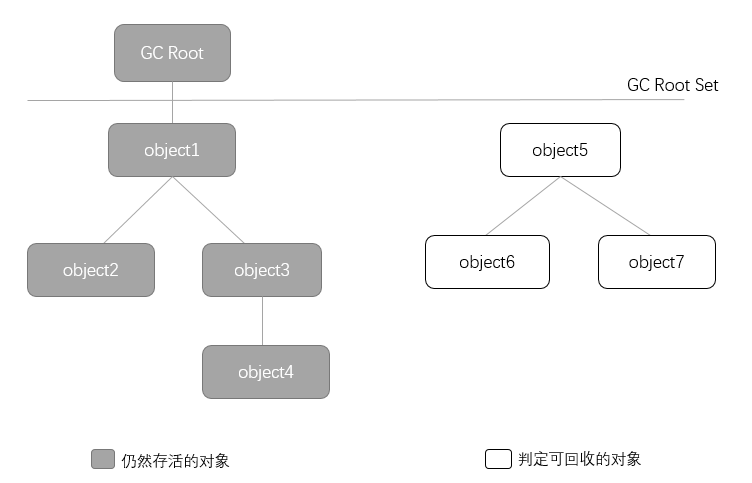
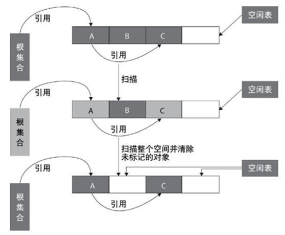

谈起GC，应该是让Java程序员最激动的一项技术，我相信每个Java程序员都有探究GC本质的冲动！
本篇博客围绕三个问题展开：
- 哪些内存需要回收？
- 什么时候回收？
- 如何回收？
哪些内存需要回收
首先回答第一个问题：不再使用的对象需要进行回收，不使用的类也有可能回收。
那么我们如何判断一个对象不再使用呢？主要有以下两种方法。
引用计数算法
定义：给对象添加一个引用计数器，每当有一个地方引用它时，计数器就加1；当引用失效时，计数器就减一；任何时刻计数器为0的对象就是不会被使用的对象。
我们可以看出，引用技术方法实现简单。并且有一些GC中确实使用的是引用计数算法，但是在Java虚拟机中并没有使用这个方法进行内存管理，原因就是一个问题很难被解决—对象之间循环引用。
来看一个例子：
1 | class Node { |
如上述代码，当我们执行最后两行代码的时候，堆中的对象因为还存在着循环引用，因此引用计数并不是0，导致GC并不会回收这两个对象的内存。
可达性分析算法
Java、C#等语言都是使用这种算法来判定对象是否存活。
基本思想：
通过一系列的称为“GC Roots”的对象作为起始点，从这些节点开始向下搜索，搜索所走过的路径被称为引用链，当一个对象到“GC Roots”没有任何引用链相连的时候，就证明此对象是不可用的。
如图：

在Java语言中，可作为GC Root对象包括以下几种：
- 虚拟机栈（栈帧中的本地变量表）中的引用对象。
- 方法区中的静态属性或常量（final）引用的对象。
- 本地方法栈中JNI(即一般说的Native方法)引用的对象。
方法区的回收
Java虚拟机规范中描述可以不要求虚拟机在方法区实现垃圾收集，因此很多人认为方法区中是没有垃圾收集的。
不要求虚拟机对方法区进行垃圾收集的原因主要是性价比比较低，在堆中，尤其是新生代中，进行一次垃圾收集一般会回收70%～95%的空间，但方法区的垃圾收集率远低于此。
即使这样，对方法区进行垃圾收集也并非没有必要，在大量使用反射、动态代理等这类频繁定义ClassLoader的场景都需要虚拟机卸载类的功能，以保证方法区不会溢出。
方法区的垃圾收集主要回收废弃常量与无用的类。
废弃常量的判定与回收比较简单：以“abc”这个常量为例，如果当前系统中没有任何对象引用这个常量，也没有任何其他地方（博主猜测是.class文件中有些地方对此常量的引用）引用这个字面量。此时如果发生内存回收，这个常量就会被清理出常量池。（常量池中其他类、接口、方法、字段的符号引用与此类似）
一个无用的类则需要满足以下三个条件：
- 该类不存在任何实例。
- 加载该类的ClassLoader已经被回收（条件比较苛刻）。
- 该类对应的Class对象没有在任何地方被引用，也就是无法使用反射机制。
虚拟机可以对满足上述三个条件的无用类进行回收。
枚举根节点
我们在这个部分应该思考一个关于可达性分析算法的问题，我们应该如何找出那些GC Roots。
目前很多应用仅仅方法区就有数百兆，如果要逐个检查这里面的引用，必然会消耗很多时间。
要解决这个问题，我们首先明确准确式内存管理的概念：虚拟机可以知道内存中某个位置的数据具体是什么类型。基于这点实现，在HotSpot中，使用一组称为OopMap的数据结构来保存内存中对象引用所存储的位置。
一般是在类加载完成的时候，HotSpot就将对象内什么偏移量上是什么类型的数据计算出来，在JIT编译（运行期优化）过程中，也会在特定的位置记录下栈和寄存器中哪些位置是引用。
这样GC在扫描的时候就可以直接得到这些信息。
再谈引用
引用分为强引用（Strong Reference）、软引用（Soft Reference）、弱引用（Weak Reference）、虚引用（Phantom Reference）4种，这4种引用强度依次逐渐减弱。
- 强引用就是指在程序代码之中普遍存在的，类似“Object obj = new Object()”这类的引用，只要强引用还存在，垃圾收集器永远不会回收掉被引用的对象。
- 软引用是用来描述一些还有用但并非必需的对象。对于软引用关联着的对象，在系统将要发生内存溢出异常之前，将会把这些对象列进回收范围之中进行第二次回收。如果这次回收还没有足够的内存，才会抛出内存溢出异常。在JDK 1.2之后，提供了SoftReference类来实现软引用。
- 弱引用也是用来描述非必需对象的，但是它的强度比软引用更弱一些，被弱引用关联的对象只能生存到下一次垃圾收集发生之前。当垃圾收集器工作时，无论当前内存是否足够，都会回收掉只被弱引用关联的对象。在JDK 1.2之后，提供了WeakReference类来实现弱引用。
- 虚引用也称为幽灵引用或者幻影引用，它是最弱的一种引用关系。一个对象是否有虚引用的存在，完全不会对其生存时间构成影响，也无法通过虚引用来取得一个对象实例。为一个对象设置虚引用关联的唯一目的就是能在这个对象被收集器回收时收到一个系统通知。在JDK 1.2之后，提供了PhantomReference类来实现虚引用。
什么时候回收
finalize方法
通过上面几种算法，虚拟机可以知道此时内存中有哪些需要被回收的对象，但是虚拟机什么时候会对这些对象进行回收呢？我们需要来谈一谈finalize方法。
在JVM中，当一个对象通过可达性分析算法被判定为垃圾的时候，JVM并不能直接对其进行回收，一是垃圾回收机制并不是实时进行，二是真正的回收一个对象之前还会判断是否要运行它的finalize方法。
当一个对象被判定为是垃圾之后，它将会被第一次标记并进行一次筛选，筛选的条件就是此对象是否有必要执行finalize方法。
如何判断一个对象是否有必要执行finalize方法呢？
两种情况下虚拟机会视为“没有必要执行”：
- 对象没有覆盖finalize方法；
- finalize方法已经被虚拟机调用过（finalize方法只会被调用一次）。
如果这个对象被判定为有必要执行finalize方法，那么这个对象会被放置在一个叫做F-Queue的队列之中，并在稍后由一个被虚拟机创建的，低优先级的Finalizer线程去执行该对象的finalize()方法，并且对象在finalize()方法执行中如果出现执行缓慢或者发生死循环，将会导致F-Queue队列中其他对象永久处于等待。甚至导致整个内存回收系统崩溃。之后GC将会对F-Queue之中的对象进行第二次标记。如果在第二次标记前这些对象在自己的finalize()方法中可以拯救自己(重新与引用链上的任何一个对象建立关联即可)也是可以成功存活下来并被移除“即将回收”的集合的。 如果此时还没有逃脱，那就真的要被回收了。
注意：finalize()方法的运行代价高昂，不确定性大，无法保证各个对象的调用顺序。博主建议大家完全可以忘掉Java语言中有这个方法的存在。
如何回收
标记清除算法
算法分为标记和清除两个阶段：首先标记出所有需要回收的对象，在标记完成后统一回收所有被标记的对象，它的标记过程就是使用可达性算法进行标记的。
不足：
效率问题，标记和清除两个过程的效率都不高。
空间问题，标记清除之后会产生大量不连续的内存碎片，导致以后分配较大对象时内存不足以至于不得不提前触发另一次垃圾收集动作。
标记，清除过程图解：

复制算法
将现有的内存空间分为两块，每次只使用其中一块，在垃圾回收时将正在使用的内存中的存活对象复制到未被使用的内存块中，之后，清除正在使用的内存块中的所有对象，交换两个内存的角色，完成垃圾回收。
如果系统中的垃圾对象很多，复制算法需要复制的存活对象数量并不会太大。因此在真正需要垃圾回收的时刻，复制算法的效率是很高的。又由于对象在垃圾回收过程中统一被复制到新的内存空间中，因此，可确保回收后的内存空间是没有碎片的。该算法的缺点是将系统内存折半。
现在的商业虚拟机都采用这种收集算法回收新生代，同时我们显然不能忍受内存折半的损耗，好在IBM公司研究表明，新生代中98%的对象都是“朝生夕死”，所以并不需要按照1:1的比例来划分内存空间。
通常是将内存分为一块较大的Eden空间两块较小的Survivor空间，每次使用Eden和其中一块Survivor。HotSpot虚拟机默认Eden和Survivor的比例为8:1。
当每次进行回收时，将Eden和Survivor中还存活的对象一次性的复制到另一块Survivor空间上，然后清理掉Eden和刚才使用的Survivor空间。
当然会存在另一块Survivor空间不够用的情况，这时需要其他内存进行分配担保。关于分配担保的内容，我们稍后再说。
内存分配策略与分代收集算法
也许你会疑惑什么是新生代以及什么是分配担保。
Java堆根据对象存活周期的不同将内存划分为新生代与老年代。新生代又被划分为三个区域：Eden、From Survivor、To Survivor。
堆的内存模型大致为：

当对象在 Eden ( 包括一个 Survivor 区域，这里假设是 from 区域 ) 出生后，在经过一次 Minor GC 后，如果对象还存活，并且能够被另外一块 Survivor 区域所容纳( 上面已经假设为 from 区域，这里应为 to 区域，即 to 区域有足够的内存空间来存储 Eden 和 from 区域中存活的对象 )，则使用复制算法将这些仍然还存活的对象复制到另外一块 Survivor 区域 ( 即 to 区域 ) 中，然后清理所使用过的 Eden 以及 Survivor 区域 ( 即 from 区域 )，并且将这些对象的年龄设置为1，以后对象在 Survivor 区每熬过一次 Minor GC，就将对象的年龄 + 1，当对象的年龄达到某个值时 ( 默认是 15 岁，可以通过参数 -XX:MaxTenuringThreshold 来设定 )，这些对象就会成为老年代（长期存活的对象进入老年代）。但这也不是一定的，对于一些较大的对象 ( 即需要分配一块较大的连续内存空间 ) 则是直接进入到老年代（PretenureSizeThreshold参数的设定）。
Minor GC（新生代GC）：在新生代中，每次垃圾收集时都发现有大批对象死去，只有少量存活，那就选用复制算法，只需付出少量存活对象的复制成本就可以完成收集。Minor GC非常频繁，并且回收速度也很快。
Full GC/Major GC（老年代GC）：老年代中对象存活率高、没有额外空间对它进行分配担保，就要使用“标记-清理”或“标记-整理”算法进行回收。回收速度比Minor GC慢上很多，发生也不频繁。
额外说一点：（动态对象年龄判定）
为了能更好地适应不同程序的内存状况，虚拟机并不是永远地要求对象的年龄必须达到了MaxTenuringThreshold才能晋升老年代，如果新生代中的Eden与from Survivor空间相同年龄对象的大小之和大于to Survivor空间中的一半，则大于或等于这个年龄的对象则无须等到MaxTenuringThreshold中要求的年龄，即可晋升老年代。
（JDK1.6环境下正常运行）。
分配担保机制
我们之前说过在新生代GC的时候，会将Eden和Survivor中还存活的对象一次性的复制到另一块Survivor空间上，然后清理掉Eden和刚才使用的Survivor空间。
但是会存在另一块Survivor空间不够用的情况，这时就需要分配担保了。
其实在发生Minor GC之前，虚拟机会检查老年代最大可用的连续空间是否大于新生代所有对象的总大小，如果大于，则此次Minor GC是安全的。如果小于，则虚拟机会查看HandlePromotionFailure设置值是否允许开启分配担保机制。如果HandlePromotionFailure=true，说明开启了分配担保机制，那么会继续检查老年代最大可用连续空间是否大于历次晋升到老年代对象的平均大小，如果大于，则尝试进行一次Minor GC，但这次Minor GC依然是有风险的；如果小于或者HandlePromotionFailure=false，则改为进行一次Full GC。
上面提到了Minor GC依然会有风险，是因为新生代采用复制收集算法，假如大量对象在Minor GC后仍然存活（最极端情况为内存回收后新生代中所有对象均存活），而Survivor空间是比较小的，这时就需要老年代进行分配担保，把Survivor无法容纳的对象放到老年代。老年代要进行空间分配担保，前提是老年代得有足够空间来容纳这些对象，但一共有多少对象在内存回收后存活下来是不可预知的，因此只好取之前每次垃圾回收后晋升到老年代的对象大小的平均值作为参考。使用这个平均值与老年代剩余空间进行比较，来决定是否进行Full GC来让老年代腾出更多空间。
但取平均值仍然是一种概率性的事件，如果某次Minor GC后存活对象陡增，远高于平均值的话，必然导致担保失败。如果出现了分配担保失败，就只能在失败后重新发起一次Full GC。虽然存在发生这种情况的概率，但大部分时候都是能够成功分配担保的，这样就避免了过于频繁执行Full GC。
参考阅读
《深入理解Java虚拟机》—周志明